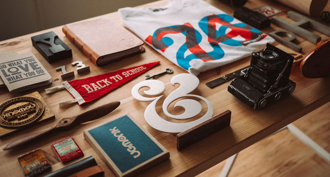
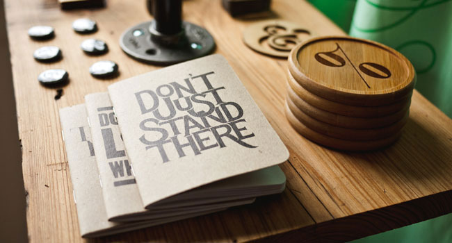
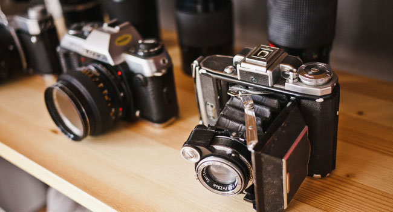
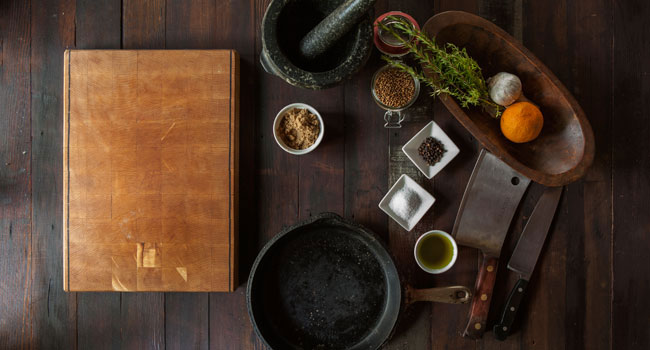
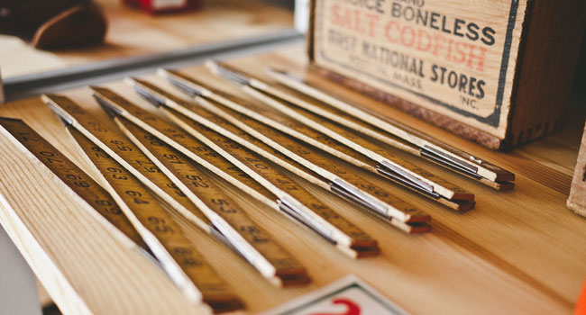
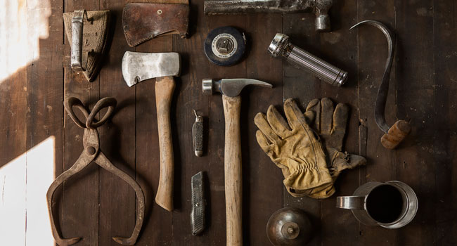
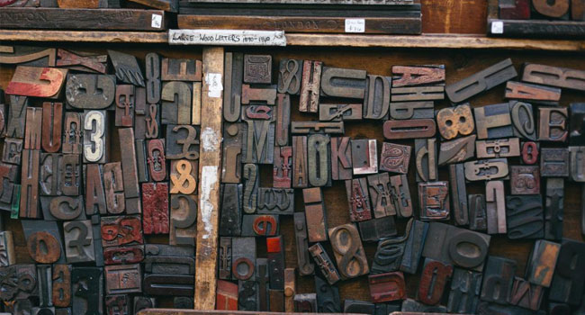
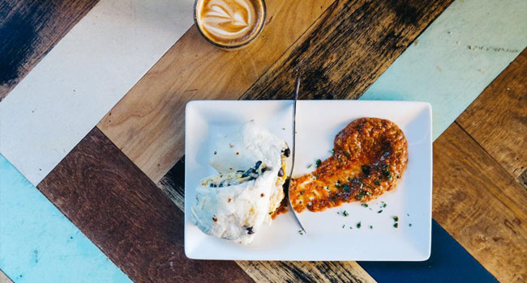
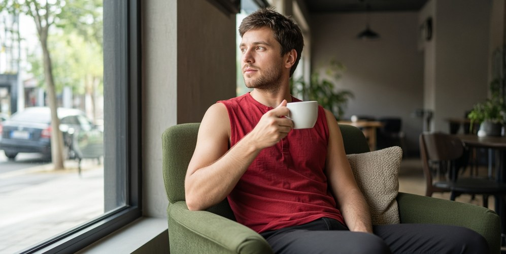

Easily customized
Make it yours with straightforward sections, reusable styles, and a color palette you can adapt.
Create something that matters
A versatile one-page template with a creative spirit. Bring your work into focus with clean design and room to breathe.
Designed to make an impression. Built to fit your screen.
Everything in its place
Considered details, flexible foundations, and a clear focus on what matters: your work.
Make it yours with straightforward sections, reusable styles, and a color palette you can adapt.
Content flows naturally from compact phones to spacious desktop screens.
Confident typography, generous spacing, and a clean hierarchy let your ideas shine.
Semantic HTML and lightweight CSS keep the template approachable and easy to maintain.
Keyboard navigation, clear focus states, and comfortable touch targets are built in.
Get the source code and start shaping the template around your own creative direction.
A closer look
Eight visual studies from the original ActiveBox collection.
Showing all 8 projects

Design exploration

Design exploration

Design exploration

Design exploration

Design exploration

Design exploration

Design exploration

Design exploration
Creative minds. Shared purpose.
The sample team from the ActiveBox template, brought together by a love of good design.
Founder & CEO
Bringing a thoughtful perspective to the details, with a passion for creating clear and memorable experiences.
Co-founder & Developer
Bringing a thoughtful perspective to the details, with a passion for creating clear and memorable experiences.
UI Designer
Bringing a thoughtful perspective to the details, with a passion for creating clear and memorable experiences.
Creative Director
Bringing a thoughtful perspective to the details, with a passion for creating clear and memorable experiences.

A word of inspiration
“Integer posuere erat a ante venenatis dapibus posuere velit aliquet. Donec sed odio dui. Aenean eu leo quam…”
Simon Sims · Interaction Designer at XYZ
Sample testimonial from the original templateYour next chapter starts here
Take a closer look under the hood. Download the template and give your next idea a place to begin.
Download source View on GitHub →Behind the build / ActiveBox
A front-end recreation by Mohammad Rohaan, evolving the original ActiveBox template into a responsive, accessible, interactive experience. Explore the decisions behind the details.
Flexible grids, generous type, and bounded reading widths replace rigid desktop dimensions. Sections rearrange as space gets tighter.
Saved themes, category filters, and a keyboard-friendly image viewer add purpose to the presentation. Motion provides a little guidance.
Navigation and images remain available without scripts. Reduced-motion preferences are respected, and blocked storage does not break the theme switch.
No. This is a portfolio demonstration based on an existing template. Sample team, portfolio, and testimonial content is illustrative. The source preserves attribution to the original design.
Browser checks cover compact phones through wide desktop viewports in both themes, alongside landscape, enlarged text, keyboard navigation, and no-JavaScript behavior. The linked test notes document the scope; physical-device coverage is not universal.
Open the source repository and follow the README. The site runs as static files with no application build step. The included browser regression checks can be run locally.